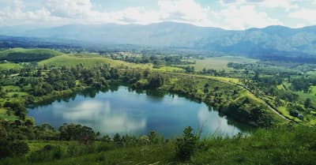

Nile Rapids Adventures was founded with a passion for adventure and a love for the River Nile. What started as a small dream to share the excitement of white-water rafting has grown into an adventure experience for visitors from around the world. Today, we remain committed to creating memorable experiences through teamwork, exploration, and a deep appreciation for nature.

Over the years, Nile Rapids Adventures has continued to grow, welcoming adventurers of different ages and backgrounds to experience the beauty and excitement of the River Nile. Through dedicated guides, a strong commitment to safety, and excellent customer service, we have built a reputation for providing unforgettable river adventures. Our journey is driven by a desire to connect people with nature while supporting the local community and promoting responsible tourism.